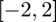

funappx_g
1-D guaranteed locally adaptive function approximation (or function recovery) on [a,b]
Contents
Syntax
fappx = funappx_g(f)
fappx = funappx_g(f,a,b,abstol)
fappx = funappx_g(f,'a',a,'b',b,'abstol',abstol)
fappx = funappx_g(f,in_param)
[fappx, out_param] = funappx_g(f,...)
Description
fappx = funappx_g(f) approximates function f on the default interval [0,1] by an approximated function handle fappx within the guaranteed absolute error tolerance of 1e-6. When Matlab version is higher or equal to 8.3, fappx is an interpolant generated by griddedInterpolant. When Matlab version is lower than 8.3, fappx is a function handle generated by ppval and interp1. Input f is a function handle. The statement y = f(x) should accept a vector argument x and return a vector y of function values that is of the same size as x.
fappx = funappx_g(f,a,b,abstol) for a given function f and the ordered input parameters that define the finite interval [a,b], and a guaranteed absolute error tolerance abstol.
fappx = funappx_g(f,'a',a,'b',b,'abstol',abstol) approximates function f on the finite interval [a,b], given a guaranteed absolute error tolerance abstol. All four field-value pairs are optional and can be supplied in different order.
fappx = funappx_g(f,in_param) approximates function f on the finite interval [in_param.a,in_param.b], given a guaranteed absolute error tolerance in_param.abstol. If a field is not specified, the default value is used.
[fappx, out_param] = funappx_g(f,...) returns an approximated function fappx and an output structure out_param.
Properties
- fappx can be used for linear extrapolation outside [a,b].
Input Arguments
- f --- input function
- in_param.a --- left end point of interval, default value is 0.
- in_param.b --- right end point of interval, default value is 1.
- in_param.abstol --- guaranteed absolute error tolerance, default value is 1e-6.
Optional Input Arguments
- in_param.ninit --- initial number of subintervals. Default to 20.
- in_param.nmax --- when number of points hits the value, iteration will stop, default value is 1e7.
- in_param.maxiter --- max number of iterations, default value is 1000.
Output Arguments
- fappx --- approximated function handle (Note: When Matlab version is higher or equal to 8.3, fappx is an interpolant generated by griddedInterpolant. When Matlab version is lower than 8.3, fappx is a function handle generated by ppval and interp1.)
- out_param.f --- input function.
- out_param.a --- left end point of interval.
- out_param.b --- right end point of interval.
- out_param.abstol --- guaranteed absolute error tolerance.
- out_param.maxiter --- max number of iterations.
- out_param.ninit --- initial number of subintervals.
- out_param.exitflag --- this is a vector with two elements, for tracking important warnings in the algorithm. The algorithm is considered successful (with out_param.exitflag == [0 0]) if no other flags arise warning that the results are not guaranteed. The initial value is [0 0] and the final value of this parameter is encoded as follows:
- [1 0]: If reaching overbudget. It states whether the max budget is attained without reaching the guaranteed error tolerance.
- [0 1]: If reaching overiteration. It states whether the max iterations is attained without reaching the guaranteed error tolerance.
- out_param.iter --- number of iterations.
- out_param.npoints --- number of points we need to reach the guaranteed absolute error tolerance.
- out_param.errest --- an estimation of the absolute error for the approximation.
Guarantee
Please check the details of the guarantee in [1].
Examples
Example 1
Approximate function on  with error tolerance , default cost budget and initial number of subintervals 18.
f = @(x) x.^2; [~, out_param] = funappx_g(f,-2,2,1e-7,18)
out_param =
struct with fields:
a: -2
abstol: 1.0000e-07
b: 2
f: @(x)x.^2
maxiter: 1000
ninit: 18
nmax: 10000000
exitflag: [0 0]
iter: 12
npoints: 36865
errest: 2.9448e-08
Example 2
Approximate function on with default error tolerance, default cost budget and initial number of subintervals 17.
f = @(x) x.^2; [~, out_param] = funappx_g(f,'a',-2,'b',2,'ninit',17)
out_param =
struct with fields:
a: -2
abstol: 1.0000e-06
b: 2
f: @(x)x.^2
maxiter: 1000
ninit: 17
nmax: 10000000
exitflag: [0 0]
iter: 10
npoints: 8705
errest: 5.2896e-07
Example 3
Approximate function on with error tolerance , default cost budget and initial number of subintervals 18.
clear in_param; in_param.a = -5; in_param.b = 5; f = @(x) x.^2;
in_param.abstol = 10^(-6); in_param.ninit=18;
[~, out_param] = funappx_g(f,in_param)
out_param =
struct with fields:
a: -5
abstol: 1.0000e-06
b: 5
f: @(x)x.^2
maxiter: 1000
ninit: 18
nmax: 10000000
exitflag: [0 0]
iter: 11
npoints: 18433
errest: 7.3654e-07
See Also
References
[1] Sou-Cheng T. Choi, Yuhan Ding, Fred J.Hickernell, Xin Tong, "Local Adaption for Approximation and Minimization of Univariate Functions," Journal of Complexity 40, pp. 17-33, 2017.
[2] Nick Clancy, Yuhan Ding, Caleb Hamilton, Fred J. Hickernell, and Yizhi Zhang, "The Cost of Deterministic, Adaptive, Automatic Algorithms: Cones, Not Balls," Journal of Complexity 30, pp. 21-45, 2014.
[3] Sou-Cheng T. Choi, Yuhan Ding, Fred J. Hickernell, Lan Jiang, Lluis Antoni Jimenez Rugama, Da Li, Jagadeeswaran Rathinavel, Xin Tong, Kan Zhang, Yizhi Zhang, and Xuan Zhou, GAIL: Guaranteed Automatic Integration Library (Version 2.3.1) [MATLAB Software], 2020. Available from http://gailgithub.github.io/GAIL_Dev/
[4] Sou-Cheng T. Choi, "MINRES-QLP Pack and Reliable Reproducible Research via Supportable Scientific Software," Journal of Open Research Software, Volume 2, Number 1, e22, pp. 1-7, 2014.
[5] Sou-Cheng T. Choi and Fred J. Hickernell, "IIT MATH-573 Reliable Mathematical Software" [Course Slides], Illinois Institute of Technology, Chicago, IL, 2013. Available from http://gailgithub.github.io/GAIL_Dev/
If you find GAIL helpful in your work, please support us by citing the above papers, software, and materials.